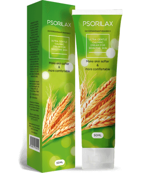

Witajcie! Nazywam się Joanna Mrówka i mam 36 lat. Zdecydowałam się opowiedzieć Wam swoją historię. Historię o walce z łuszczycą. To dość delikatny temat, szczególnie dla kobiet. Nie jest łatwo o tym mówić... Łuszczyca to skomplikowane schorzenie , które mocno wpływa na atrakcyjność fizyczną. Gdy na Twojej skórze pojawiają się brzydkie, nieestetyczne plamy, życie staje się torturą. Oprócz swędzenia, obrzęków i łuszczenia się skóry musisz radzić sobie z ludźmi, którzy gadają za Twoimi plecami. Wiele osób wierzy, że łuszczycą można się zarazić. Z tego powodu, osoby cierpiące na tę chorobę są wręcz izolowane przez społeczeństwo i nie mogą prowadzić normalnego życia... Ja jestem w wieku, w którym raczej trudno jest bardzo mocno przejmować się opinią innych ludzi, ale okazało się to ciężką próbą nawet dla mnie...
Ta historia zaczyna się pięć lat temu. Pewnego razu, biorąc prysznic, poczułam jakieś strupy na skórze w okolicach łokcia. To było pierwsze ognisko zapalne w postaci różowawych, okrągłych zmian, które trochę przypominały zadrapania. Pomyślałam, że to po prostu sucha skóra i muszę bardziej o siebie dbać. Choć muszę przyznać, że zawsze o siebie dbałam i z uwagą dobierałam kosmetyki i produkty do higieny osobistej. Nigdy nie miałam alergii.
Nietypowe zmiany rosły i po około trzech tygodniach zaczęłam się już martwić. Nie czekając dłużej, poszłam do dermatologa. Po dokładnym badaniu i przeanalizowaniu wyników usłyszałam diagnozę, łuszczyca. Byłam w szoku! Mój lekarz zalecił mi typową terapię. Leki hormonalne (maści i mleczka) i program homeopatyczny (kąpiele z dodatkiem soli morskiej i ziół). Kuracja dawała jedynie krótkotrwałe rezultaty. Plamy wyblakły i inne symptomy (swędzenie i stany zapalne) ustąpiły. Jednakże, kiedy kończyłam intensywną część terapii i zaczynało się podtrzymywanie jej wyników objawy wracały. Co więcej, okazało się, że po terapii hormonalnej, plamy zaczęły rozprzestrzeniać się o wiele szybciej. Trwało to około 2,5 roku. Wreszcie łuszczyca rozprzestrzeniła się na powierzchni obu rąk. Ale naprawdę zdziwiłam się, widząc plamy także na nogach i pośladkach! Myślałam, że zwariuję. Sytuacja była coraz gorsza i zaczęłam wpadać w panikę, co tylko ją pogarszało mój stan. Kiedy poczytałam komentarze innych ludzi, którzy także zmagali się z łuszczycą, popadłam w jeszcze czarniejszą rozpacz. Niektórzy nie mogli znaleźć lekarstwa od 15-20 lat. Inni borykali się z tym problemem przez całe życie...
Obsesyjnie wykupowałam produkty przeciwko łuszczycy z aptek. Kremy, krople, spreje, wszystko... Próbowałam alternatywnych metod leczenia, takich jak wizyty w spa ze specjalnym rodzajem błota. Raz nawet próbowałam egzorcyzmować chorobę za pomocą starego zaklęcia. Oczywiście bez żadnego efektu. Mój problem coraz bardziej utrudniał mi życie i pracę. Wstydziłam się siebie, swojego wyglądu, stałam się agresywna, przewrażliwiona i bardzo łatwo było mnie zirytować. A w tunelu nie pojawiało się żadne światełko...
Usłyszałam o od przyjaciółki, popierającej medycynę naturalną, która nie stosuje „ciężkich substancji”, takich jak hormony. Po wszystkich moich eksperymentach z lekami, nie zastanawiałam się długo. Kupiłam bezpośrednio ze strony internetowej producenta i zaczęłam swoją kurację. Nie miałam już nic do stracenia oprócz czasu i energii... Szczerze mówiąc, po tak wielu nieudanych próbach, nie miałam już nadziei na pozytywne efekty. Głęboko w umyśle wyryły mi się słowa mojego lekarza, który powiedział, że produkty naturalne są bezużyteczne tam, gdzie zawiodły hormony.
Po 10 dniach kuracji kremem nagle odkryłam, że już prawie nie czuję swędzenia i pieczenia. Czasami zdarzało mi się zapominać, że mam łuszczycę... Wygląd mojej skóry także się zmienił. Plamy były coraz bledsze, a stan zapalny zniknął. Łuszczenie także, moja skóra znów była miękka! Nie mogłam w to uwierzyć! Stosowałam na nowe plamy, a one przestawały rosnąć i w końcu zupełnie znikały. Skuteczność kuracji kremem zrobiła na mnie olbrzymie wrażenie, nie mogłam doczekać się jej końca. Po miesiącu po problemie nie było niemal śladu. Moja skóra była prawie identyczna jak przed chorobą. Nie miałam już plam na skórze, strupów ani innych objawów łuszczycy. Skóra stała się miękka i odżywiona, to prawdziwe ukojenie!
Po około trzech miesiącach praktycznie wróciłam do zdrowia. Nie pojawiały się już nowe plamy, a stare zmieniły w maleńkie ciemne cętki, które widoczne są tylko dla mnie. Teraz używam profilaktycznie, raz na dwa miesiące. Być może to nawet niepotrzebne. Tak czy siak nie ma przeciwwskazań ani nie wywołuje efektów ubocznych, może więc być stosowany nawet po zakończeniu leczenia. Nie potrafię wyrazić słowami, jak bardzo jestem szczęśliwa. Szczerze mówiąc, chciałabym, żeby moje doświadczenia pomogły wszystkim, którzy potrzebują specjalnego leczenia, by mogli zacząć nowe, zdrowe życie, bez łuszczycy! Myślę, że tylko bardzo poważne przypadki mogły by stanowić problem dla kremu .

Teraz chciałabym podzielić się z wami informacjami o składzie tego produktu. zawiera 5 podstawowych składników.
- DIHYDROAWENTRAMID D
Działa kojąco i pomaga na swędzenie. Ma także łagodne działanie przeciwbólowe na skórę i stawy. - WOSK KANDELILA
Ma właściwości antybakteryjne i pomaga w leczeniu ran. Jest głównym składnikiem, który wspiera wnikanie składników aktywnych w głębsze warstwy skóry. - MASŁO SHEA
Łagodzi stan zapalny oraz reguluje pracę gruczołów łojowych. Ma działanie kojące i uśmierzające. - OLEJ RZEPAKOWY
Zatrzymuje wilgoć w skórze i hamuje procesy złuszczania. Ułatwia peeling obszarów zaatakowanych chorobą. Ma właściwości antyoksydacyjne i ożywia skórę witaminami i minerałami. - PANTENOL
Pobudza komórki skóry do pracy i wspomaga procesy regeneracyjne, które w nich zachodzą. Eliminuje uczucie pieczenia i swędzenia oraz pomaga prawidłowo złuszczać skóry.
DIHYDROAWENTRAMID D, WOSK KANDELILA, MASŁO SHEA, OLEJ RZEPAKOWY, PANTENOL – składniki te odkażają skórę i chronią przed szeregiem infekcji, które mogłyby przeniknąć do krwiobiegu. Regulują procesy metaboliczne w głębszych warstwach skóry, poprawiają mikrokrążenie oraz spowalniają procesy nieprawidłowego podziału komórek skóry.
To ważne by zrozumieć, że formuła zawiera wyłącznie oryginalne składniki można zamówić tylko przez stronę internetową producenta! W innych wypadkach ryzykujecie kupno podróbki, która może pogorszyć przebieg choroby.
Wyjątkowy skład pozwala na używanie go w każdym stadium i typie choroby. Możliwe jest także łączenie go z tradycyjnymi metodami leczenia. Przy okazji, mój lekarz także był zaskoczony wynikami, jakie pozwala uzyskać . Teraz zaleca ten krem jako główne lub wspomagające leczenie łuszczycy, choć nie w ciężkich przypadkach, których może nie być w stanie wyleczyć.
Gorąco wierzę, że moje doświadczenia pomogą Ci odzyskać zdrowie. Z radością odpowiem na wszystkie pytania.
Komentarze
Helena
Dzięki za informację! Spróbuję!
Wiktoria
u mnie łuszczyca pojawiła się 9 lat temu... Próbowałam już tylu rzeczy! Dlaczego lekarz mi tego nie polecił? Czy to coś nowego?
Joanna
Ten produkt, jest faktycznie nowym lekiem. Może Twój lekarz nie miał z nim jeszcze do czynienia.
Ewa
Tak, to bardzo ważne, żeby używać tylko oryginalnego ! Niestety, raz kupiłam nieoryginalny produkt i bardzo mi się pogorszyło! Tego nie da się kupić w aptece...
Joanna
Oryginalne leki są absolutnie konieczne, aby leczenie było skuteczne. bardzo rzadko można znaleźć w aptekach. Nie produkują go w dużych ilościach. Dlatego najlepiej zamówić go ze strony producenta. To najszybsza i najpewniejsza metoda zakupu!
Michalina
Joanno, podchodzę do tego rodzaju leków bardzo sceptycznie. Nie wierzę by mieszanie olejków i "chemicznych" składników odkażających miało wyleczyć łuszczycę! Albo cierpiałaś na łagodną formę choroby, albo to w ogóle nie była łuszczyca!
Joanna
Michalino, diagnozę stawiał szanowany i cieszący się zaufaniem lekarz. To prawda, że nie zwlekałam z rozpoczęciem leczenia. Poszłam do lekarza, kiedy tylko zauważyłam pierwsze objawy. Być może nie jest w stanie wyleczyć bardzo poważnej łuszczycy, ale z pewnością naprawdę pomaga bardzo wielu ludziom.
Maria
Też jestem we wczesnym stadium choroby. Na pewno tego spróbuję! Nie chcę zaniedbać swojej sytuacji.
Andrzej
Zgadzam się z Joanną. może pomóc wielu ludziom. Ja, na przykład, Leczyłem się bezskutecznie przez 7 lat. W końcu zacząłem stosować , poczułem poprawę już po miesiącu! Sugeruję, żebyś jak najszybciej zaczęła tego używać.
Hania
Muszę powiedzieć, że złagodził objawy łuszczycy u mojego męża w 2-3 miesiące. Jego przypadek na pewno nie był łatwy. Nie mógł brać hormonów i był uczulony na maści. był dla niego idealny!
Anna
Dzięki, że podzieliłaś się z nami swoimi doświadczeniami! Tak jak Ty zmagałam się z łuszczycą... Moja choroba postępuje i konwencjonalne leczenie w ogóle nie pomaga.
Joanna
Anno, nie poddawaj się! Wszystko będzie dobrze! Wierzę, że to lekarstwo Ci pomoże!
Aleks
Czy można używać , mając alergię na olejków?
Joanna
Lepiej zapytaj o to lekarza! Nie słyszałam, żeby wywołał reakcję alergiczną. Lekarz mi wspominał, że stosują pacjenci z objawami alergii.
Kasieńka
Jak te olejki leczą chorobę? Ślady na skórze to ich jedyny skutek...
Joanna
Olejki Cię nie leczą. Pomagają ciału zwalczyć problem. Dostrajają procesy metaboliczne skóry, zapewniają witaminy i minerały, poprawiają mikrokrążenie itp. Przede wszystkim zapewniają lepsze warunki.
Bartek
Wygląda nieźle, wypróbuję! Swędzenie bardzo mi przeszkadza, tak jak życie w takim stanie!
Beata
Muszę przyznać, że pomógł mi, ale nie tak szybko jak w Twoim przypadku. Oczywiście, cierpiałam na łuszczycę znacznie dużej, około 10 lat.
Jan
Moja kuracja z trwała 6 miesięcy. Nie żałuję! To jedyny produkt, który stopniowo uczynił moje życie łatwiejszym. Pozostałe produkty nie dawały podobnych efektów nawet po roku stosowania.
Agnieszka
Twoja historia bardzo mi pomogła! Zacznę kurację i wreszcie znów poczuję się zdrowa.
Sylwia
Dlaczego wciąż używasz skoro jesteś wyleczona? Czy to konieczne? Czy nie uzależnia?
Joanna
Oczywiście, nie jest to konieczne i lepiej, żeby nie stało się nałogiem. W moim przypadku choroba objęła duże obszary skóry. To zostawiło na niej ślady. Muszę przyznać, że jestem przez to nadmiernie ostrożna, mimo że nawet mój lekarz mówi, że nie mam powodów do zmartwień.
Diana
Dziękuję, za Twoją historię!! Znów zaczęłam wierzyć, że pozbędę się łuszczycy! Z pewnością opiszę swoje doświadczenia po użyciu !
Grzegorz
Wypróbowałem w zeszłym roku. Bardzo mi pomógł. Polecam każdemu.
Tomek
Moja mama używała tego przez miesiąc. Teraz jest bardzo szczęśliwa! Nie ma nowych plam, a stare wyblakły lub zniknęły. Mam nadzieję, że zapomni o łuszczycy raz na zawsze.